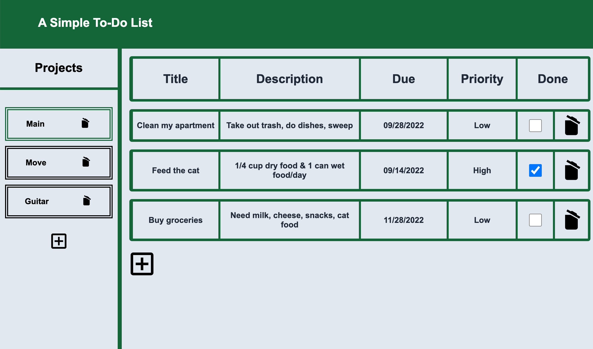
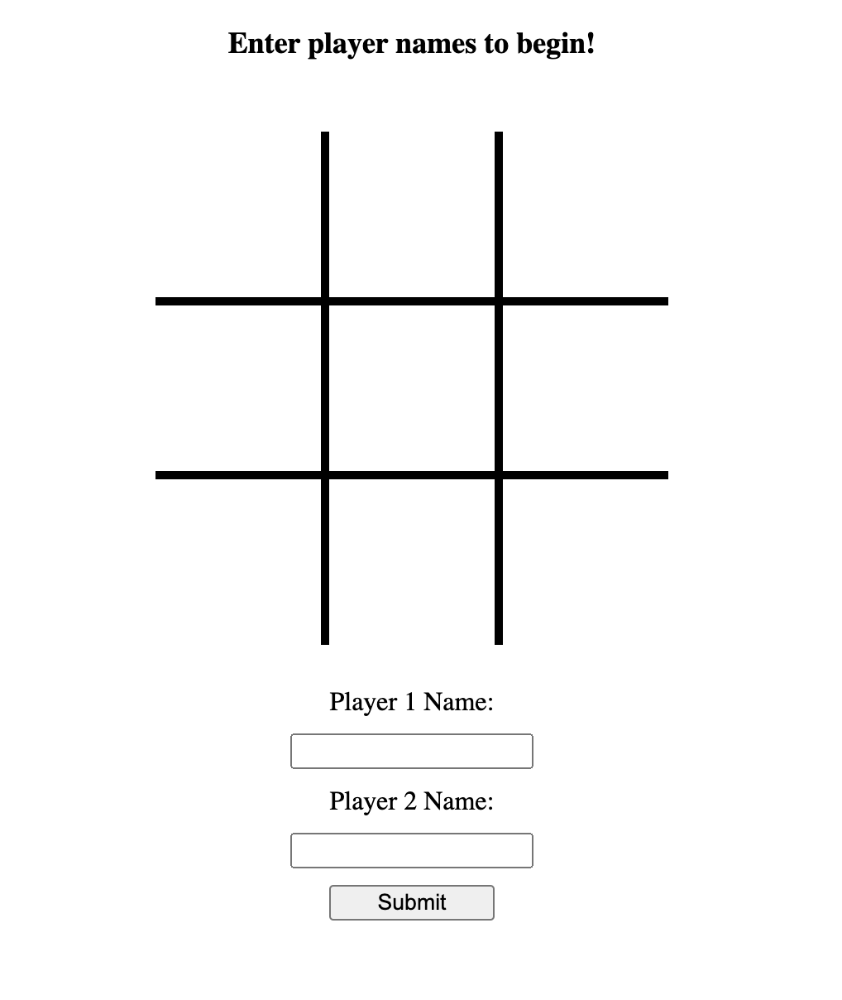
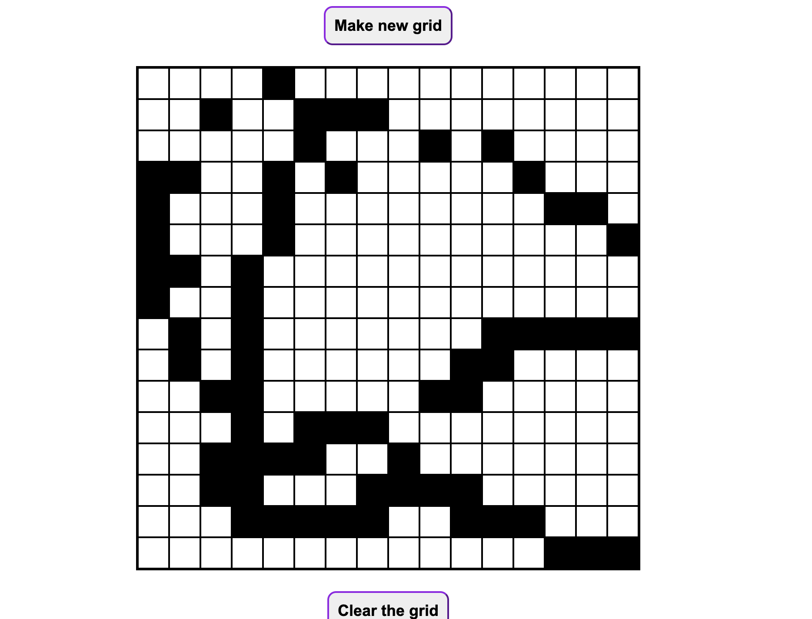
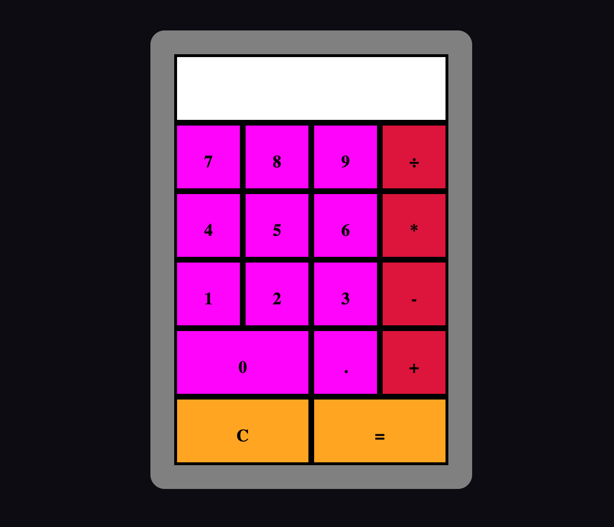

To Do List
 Webpage CodebaseThis is a slightly more complex project - I put this one together with webpack. Took some effort to figure out how to get that to work with github but mission accomplished! Allows for adding and editing todos or projects, and stores everything local storage (though I am not sure that aspect works with GitHub).
Tic-Tac-Toe
 Webpage CodebaseThis was a tic-tac-toe game I developed in JavaScript. Right now you can play against another player (or yourself). I'm planning to come back and add a CPU at some point!
Etch-A-Sketch
 Webpage CodebaseA fairly simple but fun JavaScript project - an etch-a-sketch that allows you to recreate the grid in any size you'd like.
Calculator
 Webpage CodebaseA calculator also developed in JavaScript. The main functionality isn't super complicated, but there are a decent number of possible cases you have to look out for (what if operations are chained? what if the number is too long for the calculator? Etc.). Check out the codebase if you want to see how I handled them.